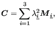
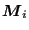
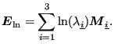

Next: Linear elasticity for large Up: Materials Previous: Materials Contents
Linear elastic materials are characterized by an elastic potential of which only the quadratic terms in the strain are kept. It can be defined in a isotropic, orthotropic or fully anisotropic version. Isotropic linear elastic materials are characterized by their Young's modulus and Poisson's coefficient. Common steels are usually isotropic. Orthotropic materials, such as wood or cubic single crystals are characterized by 9 nonzero constants and fully anisotropic materials by 21 constants. For elastic materials the keyword *ELASTIC is used.
A linear elastic material, as implemented in CalculiX simulates a linear elastic relationship between the Lagrange strain and the Piola-Kirchhoff stress of the second kind (PK2). For small strains and rotations, the Lagrange strain reduces to the linear strain and the PK2 stress to a generic stress tensor. For large strains and/or rotations one can prove that a linear elastic connection of the Lagrange strain and the PK2 stress does not make physically sense (cf. next section), and other relationships derived from stored-energy functions are preferred.
In Abaqus, a linear elastic material expresses a linear elastic relationship between the logarithmic strain and the Cauchy stress. If the Cauchy-Green tensor is written as
 |
(383) |
where  are the three principal stretches and
are the three principal stretches and
 |
(384) |
By defining a linear elastic material in user subroutine umat_abaqusnl.f one can simulate this behavior. In fact, the material coded as an example in umat_abaqusnl.f is exactly such material.
For finite strain (visco)plasticity, triggered by the keywords *PLASTIC and/or *CREEP in combination with the paramter NLGEOM on the *STATIC card, a hyperelastic-type potential is used for the elastic range. For details the reader is referred to [24], Section 6.3.1.